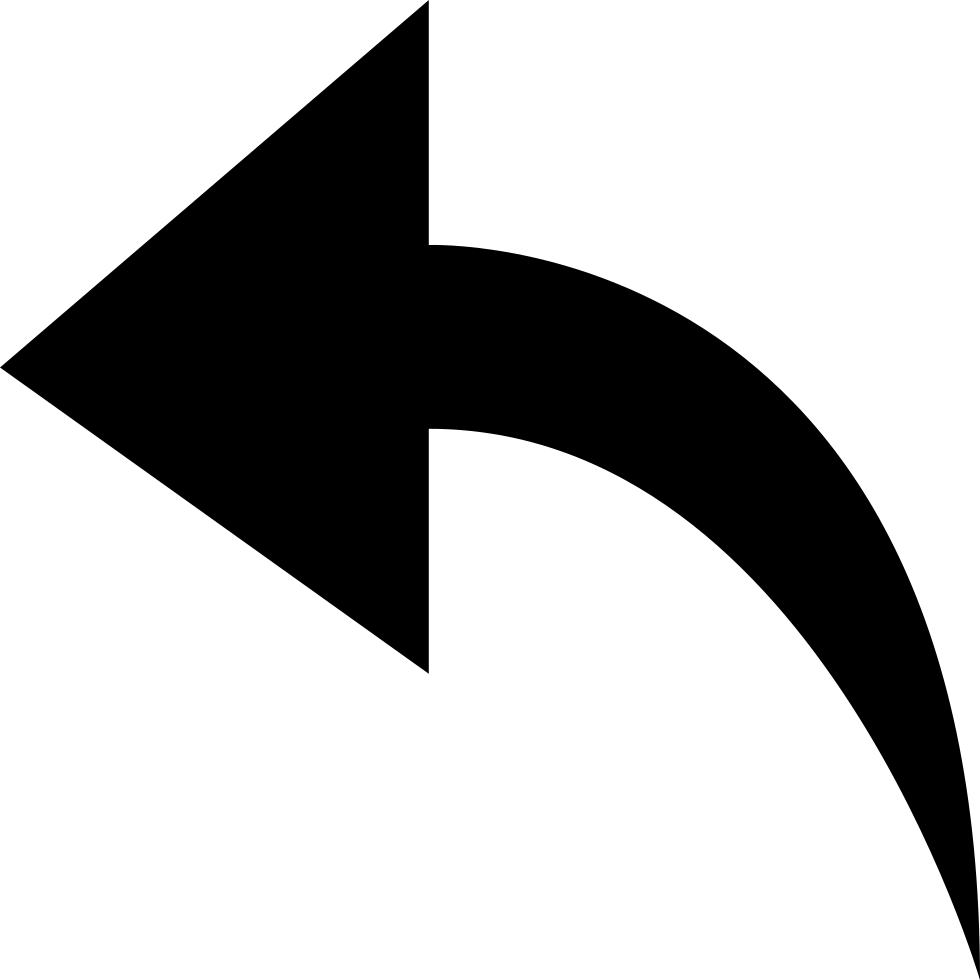

EXPLANATION:
Life is not about the number of friends that we have, which simply means that you do not need to have too many people
in your lives. Instead, we should focus on having just a couple of people in our lives who could be blindly trusted.
You need to identify people right, and if you do so, make sure that you preserve the best of the ones.
Life is not about having so many friends; it is only about having the ones who are worth receiving
your love, time, and respect. Be with friends who are loyal, the ones who won’t leave you when you are down.